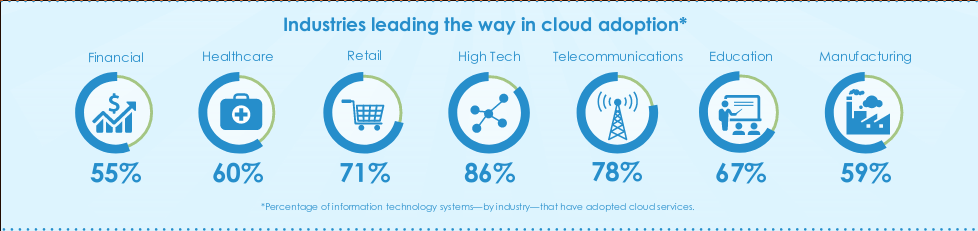
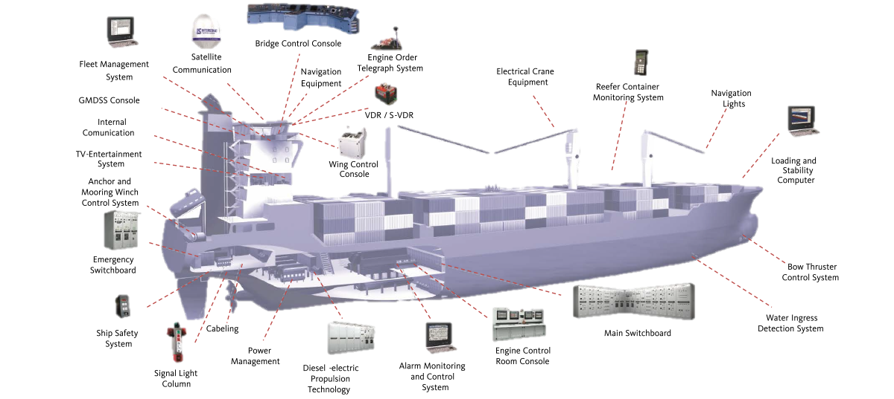
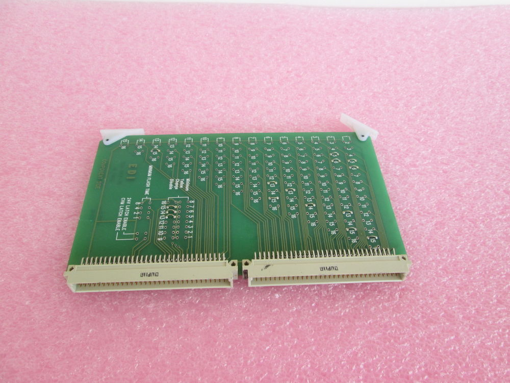
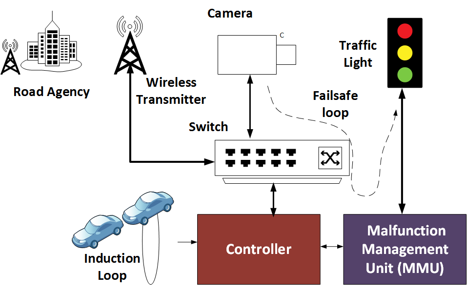

Cyber-security in Critical Infrastructure
David Wang
What is critical infrastructure (CI)?
Assets physical or virtual, vital to the US that the incapacity or destruction of such systems and assets would have a debilitating impact on security, national public health or safety.
- Patriot Act of 2001
NIPP 2013
NIPP13
- National Infrastructure Protection Plan of 2013
- Model after 1998 Presidential Decision Directive-63
- Identifies 16 critical infrastructure sectors
- Sets forth comprehensive risk management framework
- Defines roles and responsibilites for federal, state, local agencies and private sectors

General trends and risks of critical infrastructure
References
DHS U.S. Critical Infrastructure 2025: Strategic risk assessment
DHS Risks to Critical Infrastructure Using Cloud Services
ICS-CERT 2014 year in review
ICS-CERT 2016 year in review
Infrastructure trends
- Increasing dependency on information and communication technology (ICT) in all 16 CI sectors
- ICTs creates numerous advantages such as increase in efficiency, prodcution and standard of living
- But its inherent reliance on network connection for functionality introduces new vectors of attack.
- DHS office of cyber and infrastructure analysis identified 3 key ICT technologies that will have profound impact on CI
- GPS
- IoT devices
- "Cloud" technology
Global positioning system (GPS)
- GPS have essentially made paper maps obsolete
- GPS largely considered an invisible utility
- OCIA assesses crippling dependence on GPS-based technologies for positioning, navigation and timing
- Interruption to GPS systems could greatly hinder infrastructure operations, if not completely disabling it
- Good news is this event is highly unlikely to occur
Internet of things (IoT)
Internet of things (IoT)
- In the next decade, we will see increasing dependency of IoT devices in, water, power, emergency services, healthcare and transportation systems
- It is estimated that we will see 50 billion IoT devices online in the next 5 years.
Concerns about IoT
- Billions of IoT devices creating, transmitting and storing data will result in "data exhaust"
- This allows attackers to gain insights into sensitive information such as
- Telemetry, voice, video, health, Infrastructure status
- Presidential innovation fellow project, analysis of emerging IoT technologies cities the following concerns
- Engineering and design culture of IoT places functionality and speed to market as priorities above security concerns
- No accepted repository, or organization exists to capture lessons and mistakes learned
Concerns about IoT (CONT)
- Hewlett-Packard conducted an experiment on popular IoT devices
- 70 percent of devices did not encrypt communications to the internet and local network
- 60 percent did not use encryption when downloading software updates
Example of IoT vulnerabilities
- July 2015 Chrysler Uconnect recall
- CVE-2015-5611; UConnect system allowed an unauthenticated connection from other access points on the Sprint Network
- Attackers were able to gained control to steering, transmission and brake capabilities of target vehicle
- St. Jude Medical's cardiac devices
- Vulnerabilities in its wirless protocol allows attacker to access its settings
- Allows attackers to deplete the battery or administer incorrect pacing or shocks
The "Cloud"
The "Cloud"
- Attrative for its significant cost saving
- Distributed capability may offer better availability than traditional IT and hosted services
- Down side is cloud technology provides ample opportunities for unauthorized access and privilege escalation
- Cloud Adoption rate 
Examples of industry adoption
- Energy sector
- Smart grids; detect and react to local changes in usage.
- Transportation system sector
- Airline industry rely on cloud systems for scheduling passengers, flights and cargo
- Logistic industries and maritime shipping scheduling and routing
- Industrial control systems
- Distributed control systems and process control systmes used in manufacturing
Potential attack vectors on cloud services
- Brute force
- Brute force password combinations to gain unauthorized access
- Data leakage
- Accidental or intentional releasing of information outside intended audience
- Denial of service
- Prevent legitimte user from accessing information contained on the network
- Ram scraping
- Monitor and extract data from system during data processing while its unencrypted
Potential attack vectors on cloud services (CONT)
- Virtual machine escape
- breaking out of virtual enviroment to gain elevated access to resources or interacting directly with with hosting enviroment
- Phishing
- Social engineering technique used to solicting privliged information
- Hyperjacking
- Attack to compromise hypervisor, thus gaining control of underlying virtual machines managed by the hypervisor
State of US infrastructure security
State of US infrastructure security
- For now most attacks on US infrastructure are prepetrated for the purpose of obtaining intellectual property and/or sensitive data
- It is estimated the US incurs a economic loss of $300 billion per year as a result of theft of intellectual property and trade secrets
Examples of infrastructure attacks
- Black Energy Link
- First instance of Black Energy uses spear-phishing as its attack vector
- Emails were sent containing powerpoints embeded with CVE-2014-4114 which allowed remote attackers to execute arbitrary code via a crafted OLE object in an Office document
- Once infected black energy attempts to take over human-machine interfaces (HMIs) of industrial control systems
- Compromised systems include, GE Cimplicity, Advantech/Broadwin WebAccess and Siemens WinCC
Examples of infrastructure attacks (CONT)
- Havex Link
- Remote access trojan (RAT), targets energy grid operators, electricity generation firms, petroleum pipeline operators
- Estimated to have impacted as many as 2,000 infrastructure sites
- Attack vector spear-phishing and watering hole
- Once system has been infected havex scans for ICS on the network
- Collects information such as server name, Program ID, vendor information, running state, group count, and server bandwidth
Port and shipping infrastructure
ReferencesDHS seaport cyber attacks
A Reliable Waterway System Is Important to Agriculture
Port of Los Angeles facts and figures
GPS jamming and the Impact on Maritime Navigation
background on seaports
- Faciliate movement of trade to both foreign and domestic markets
- 1.1 billion tons of domestic trade and 1.2 billion ton of foreign trade moved through U.S. ports each year
- U.S. ports often specialize in certain comomodities
- Ports along the Mississippi gulf accounts for 48.7 percent of all grain exports
- Port of Los Angeles accounts for 40% of imports such as furniture, auto parts, apparel and electronic
- All critical infrastructure sectors directly or indirectly depend on the imports, exports and domestic shipping conducted at U.S. seaports
Industrial control systems in marirtime
- ICS controls many aspects of port operation such as cargo tracking and logistics, lock operation, automated crane operation and ship logistic
- Cargo vessels rely on Electronic chart display and information system (ECDIS), integrates GPS, automatic identification systems, radar to display vessel position in relation to land, navigation aid and hazard
Typical shipboard ICS
Seaport security concerns
- Network connectivity and interdependencies
- Foreign dependencies
- GPS jamming and spoofing
Network connectivity and interdependencies
- Modern ICS's are IP addressable and increasingly connected to company enterprise system
- Often visable to public search engines such as Shodan
- Mobile devices such as personal laptops and other personal devices are often integrated into port networks
- Open WiFi is often offered as a service to crews of visiting vessels
Foreign dependencies
- Foreign hardware and software used by U.S. ports are vulnerable to the installation of malware during manufacturing process
- Zombie Zero
- Malware preinstall and hidden within Chinese made scanner hardware used by shipping and logistic firms
- Once scanner was plugged into the network, the malware established connection to a location in China
- Malware had complete visibility of financial data and the ability to modify shipping databases
GPS jamming and spoofing
- Researcher from UT Austin were able to take control of a vessel by using a GPS spoofing device, the device injected its own signal into the vessel's GPS antennas, enabling it to steer the vessel as it saw fit
- UK Ministry of Defence conducted research where vessels were sent into areas being actively jammed. ECDIS system showed no posisition change while being jammed, thus causing the vessel to veer off course
Intresting attack on port infrastructure
- Belgium drug traffickers
- First gained access to Port of Antwerp IT systems through phishing attacks
- After inital breach was discovered and mitigated, hackers broke into port premises and attached key-loggers to computers
- The group hid narcotics in legitmate cargo, and used their access to IT systems to obtain location and security details of containers
Anatomy of traffic intersection
- Sensors
- Used to detect cars and inspect infrastructure
- Indcution loops and cameras are most commonly used
- radar and ultrasonic sensors are less common
- Controllers
- Connects directly to sensors and control light states
- Can be configured to operate in different modes
- Pre-timed mode; controlled on preset timings
- Semi-actuated mode; side street activates based on sensors and main street runs continuously
- Fully-actuated; both streets are serviced based on sensor input
Anatomy of traffic intersection (CONT)
- Communications
- Controllers may communicate with both each other and central server to share information
- Hard-wired communication is sometimes used but become difficult to maintain as the city grows
- Radios are most commonly used to provide connectivity
- Operates in ISM band at 900 MHz or 5.8 GHz
- Malfunction Management Unit
- Hardware-level safety mechanism
- Physical "whitelist" of valid light states
- In case of conflict MMU overrides the controller and forces known-safe configuration
Example of MMU
Typical traffic intersection
Traffic signal network

- All devices form a single private network and belong to the same IP subnet
Traffic signal network (CONT)
- 5.8 GHz radios
- 5.8 GHZ are preferred for its higher data rates
- Communicates using proprietary protocol, utilize point to point or point ot multipoint connections
- Similar to 802.11 protocol and broadcasts an SSID which is visible from standard laptops and smartphones
- Connections between radios are unencrypted
Traffic signal network (CONT)
- 900 MHz radios
- Used when there is not a direct line of sight connection due to obstructions
- Uses proprietary spread spectrum protocol
- In order to make connection, both master and slave must know the network name a 16-bit slave ID value
- Similar to 5.8 GHz radios there are no encryption between connections
Traffic signal network (CONT)
- Controller netwroking
- Controller settings maybe modifed through the network via a FTP connection whcih allows access to writable configuration database
- Writing requires a username and password, but most left at default values
- command can be sent via the NTCIP protocol 1202, which specifies traffic signal communication standards
- During installation operating system build leaves debug port open for testing. Often times OS is not rebuilt with port disabled
Attacking traffic infrastructure network
- Once the network is accessed at a single point, the attacker can send commands to any intersection on the network
- 5.8 GHZ radios
- Due to the lack of encryption, any radio that implements the proprietary protocol and has knowledge of the SSID can access the network
Attacking traffic infrastructure network (CONT)
- 900 MHz radios
- requires knowledge of both the network name and the 16-bit slave ID value
- Frequency hopping done by Spread spectrum protocol makes sniffing packets difficult
- 16-bit ID can be brute forced and theoretically only require several days
- In pratice most ID values were less than one hundred and can be brute forced in minutes
Accessing traffic controller
- Once on the network there are two primary methods of accessing the controller
- Take advantage of the open debug port
- Debug port gives attacker ability to read and write arbitrary memory locations, kill tasks, an reboot device
- Remote control functionality defined by NTCIP 1202
- Attackers can craft a UDP packet with commands defined by NTCIP
Controlling the lights
- Two vectors of attack are available
- Malicious logic statements
- Switching the state of specific light, or freezing the state of the intersection
- Modify light timings
- Shorten or lengthen the timing of specific light states
- MMU still maintains safety by disallowing conflicting lights